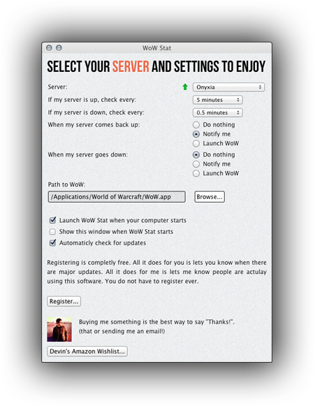

WoW Stat is a World of Warcraft server monitor utility. All you have to set is the server you wish to monitor. If your server goes down it will automatically notify you when it is back up, and even relaunch WoW for you.
Status
There are builds in the Release section for OSX and Windows
This is a port of my C# app from 2007, this time written in HTML & Javascript for Titanium.
License
Free. BSD. Enjoy.